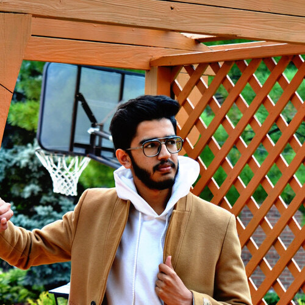

Surya Sanjay, and I’m an undergrad at the University of Michigan. I’m currently studying to become a doctor, and I hope to specialize in cardiothoracic surgery.
I’m part of two research labs, the Cardio Biomechanics Lab in the Biomedical Engineering department at the University of Michigan, and the Biomedical Physics Lab in the Department of Physics and Astronomy at Wayne State University in Detroit. I also run DravLing, a virtual group that promotes the study of South Asian linguistics. My main research interests are in ① computational modelling of biological systems from a clinical context, and ② both traditional and computational approaches to historical linguistics.
This website features a portfolio of various works I’ve taken part in that I find significant, both academic (Research) and non-academic (Projects), along with whatever thought experiments I feel are worthy enough to post (Blog)
Feel free to reach out to me at my email, connect with me on LinkedIn, or follow my Twitter account.